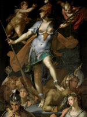

Афіна, в грецькій міфології богиня мудрості, справедливої війни і ремесел, дочка Зевса і титаніди МЕТИД. Зевс, дізнавшись, що син від МЕТИД позбавить його влади, проковтнув вагітну дружину, а потім сам зробив на світло абсолютно дорослу Афіну, що вийшла з допомогою Гефеста з його голови в повному бойовому обладунку.
Афіна була як би частиною Зевса, виконавицею його задумів і волі. Вона - думка Зевса, здійснена в дії. Її атрибути - змія і сова, а також Егіда, щит з козячої шкури, прикрашений головою змееволосой Медузи, що володіє магічною силою, страхітливий богів і людей. За однією з версій, статуя Афіни, паладій, нібито впала з неба зійшов звідси її ім'я - Афіна Паллада.
Ранні міфи описують, як Гефест намагався силою опанувати Афіною. Щоб уникнути втрати невинності, вона чудесним чином зникла, і насіння бога-коваля пролилося на землю, породивши змія Еріхтонія. Дочки першого правителя Афін, напівзмія Кекропа, отримавши на зберігання від Афіни скриню з чудовиськом і наказом не заглядати всередину, порушили обіцянку. Розгнівана богиня наслала на них безумство. Вона ж позбавила зору юного Тіресія, випадкового свідка її обмивання, але наділила його даром віщуна. Афіна в період героїчної міфології боролася з титанами і гігантами: вона вбиває одного гіганта, з іншого здирає шкіру, на третю навалює острів Сицилію.
Класична Афіна протегує героям і захищає громадський порядок. Вона виручала з біди Беллерофонта, Ясона, Геракла і Персея. Саме вона допомогла своєму улюбленцеві Одіссею подолати всі труднощі і дістатися до Ітаки після Троянської війни. Найзначніша підтримка була надана Афіною матереубійци Оресту. Вона допомогла Прометею викрасти божественний вогонь, захищала греків-ахейців під час Троянської війни; вона - покровителька гончарів, ткаль і рукодільниць. Культ Афіни, поширений по всій Греції, особливо шанований був в Афінах, яким вона захищала.